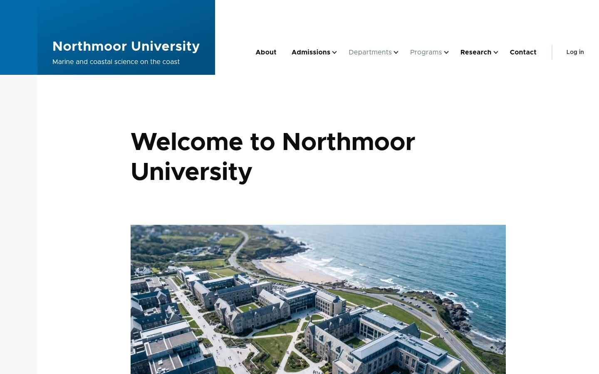

Demo 1 · Where it started
A university website with AI built in
At DrupalCon, 1xINTERNET ran a hands-on workshop. We each added AI features to a website for Northmoor University, which is made up.
- Swap "university" for "council": it's the same Drupal underneath
- 4 short steps, each with a written guide
- Anyone can run it, with a free trial AI account
